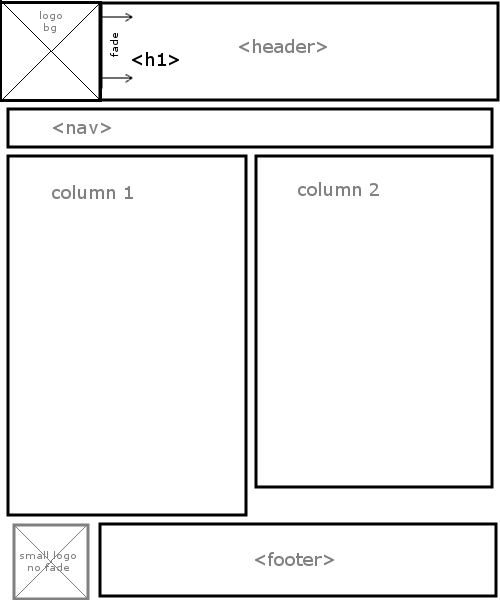
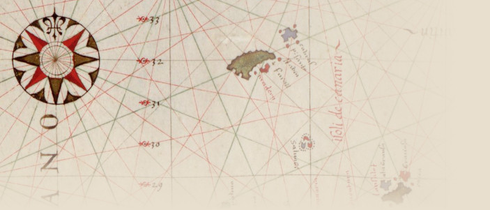

Site Overview
The site should highlight the client's resume, while also allowing him to add content that showcases his IT knowledge. The site should be optimistic.
The site will be hosted at https://dean-e-peterson.github.io/portfolio/prjAccessibility/index.html
New Look
The client changed his mind and wanted a more sleek, corporate look. The original antique look is still documented at the end in case he wants to return to the original look.
Diagrams
Site Map
Note: The following sitemap is aspirational. It shows how drop-down menus will be implemented in the future.
| Page Name | Filename | In Nav Bar? | Parent Page |
|---|---|---|---|
| Home | index.html | Yes | |
| Tips | tip.html | Yes | Home |
| Disability | disability.html | Yes | Home |
| Hobbies | hobby.html | Yes | Home |
| Résumé | resume.html | Yes | Home |
| Contact | contact.html | Yes | Home |
| Specification | clientSpec.html | Not in nav bar for production Yes in nav bar during development |
Home |
| Resources | resource.html | No | Tips |
| Humor | humor.html | No | Hobbies |
| Work | work.html | No | Résumé |
Wireframe
New Font
Heading font now defaults to the Google web font "Open Sans".
New Logo
The new logo, which may or not be used, was created by Dean Peterson.
New Color Palette
The palette was created by starting with CSS named color skyBlue, and working from there. Specifically, the reasoning behind the colors are:
- #87CEEB - skyBlue - Basis of scheme, picked first.
- #0000CD - mediumBlue - Possible additional blue for logo, etc.
- #0000EE - default hyperlink blue - Works, left as default.
- #551A8B - default visited hyperlink purple - ditto.
- #000000 - black - For sleek look (black goes w/ anything).
- #FFFFFF - white - For text on dark background.
- #2F4F4F - darkSlateGray - Near-black for gradient use
- #696969 - dimGray - An intermediate gray for nav borders
Here are the same colors displayed visually:
- #87CEEB
skyBlue - #0000CD
mediumBlue - #0000EE
blue - #551A8B
purple - #000000
black - #FFFFFF
white - #2F4F4F
darkSlateGray - #696969
dimGray
Original Antique Image/Logo
The original look background image is an excerpt of from the Portolan atlas of the Mediterranean Sea, western Europe, and the northwest coast of Africa, ca. 1590.
The compass rose in the upper left corner of the background image doubles as a logo.
Original Antique Color Palette
The palette was created from the original of the background image using Adobe Color CC. The lightest color (#E8DFCE) was added manually by pulling it from the same background image with an eyedropper. The darkest color (#000000) was added manually for legible body text.
- #E8DFCE
beige? - #D9CDBF
dark beige? - #A8A18E
tan? - #8A1512
rusty red? - #583718
brown? - #240802
off black? - #000000
black
Note: The color names are approximate, and were created by someone who is partially color blind. Use hex codes instead, which were generated from the background source image.